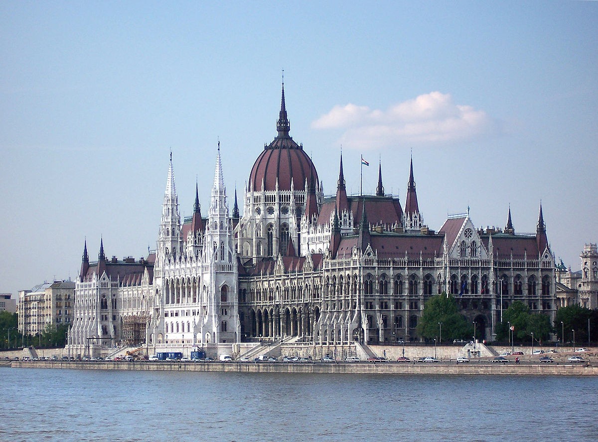
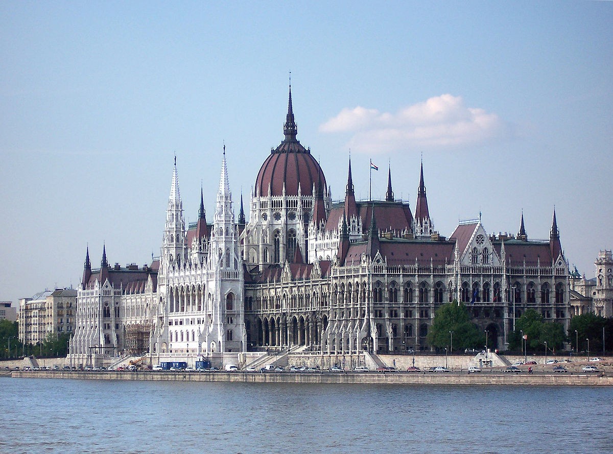

Ungaria este un stat situat în Centrul Europei, în Câmpia Panonică și la poalele sudice ale Carpaților Occidentali Interiori,
la o distanță egală de Oceanul Atlantic și Munții Ural, respectiv de Marea Mediterană și Marea Nordului.
Pe teritoriul ei este situată aproape toată suprafața Câmpiei Panonice, din care face parte Parcul Național Hortobágy,
înscris pe lista patrimoniului mondial UNESCO. Ungaria se învecinează cu Serbia la sud, Croația și Slovenia la sud-vest,
Austria la vest, Slovacia la nord, România la est și cu Ucraina la nord-est.
Ungaria este o republică parlamentară. Capitala țării, Budapesta, este și cel mai mare oraș al ei după populație de 1,7 milioane locuitori.
În 2010, orașul Pécs a fost ales Capitală Europeană a Culturii. Țara face parte din NATO, iar din mai 2004 este membră a Uniunii Europene.
Ungaria s-a numărat printre inițiatorii Grupului de la Visegrád, o organizație de cooperare economică formată
din patru state central-europene: Cehia, Polonia, Slovacia și Ungaria.
Odată la 4 ani sunt alegeri parlamentare. Primul ministru este desemnat de președintele Ungariei. Prim-ministru numește miniștrii, și desemnează Guvernul.
Parlamentul Ungar are o singură cameră, formată din 199 de membri.
Forma de stat a Ungariei este republică. Constituția Maghiară, scrisă în 2011, a intrat în vigoare la 1 ianuarie 2012. Președintele este ales odată la 5 ani.
Funcția președintelui este reprezentativă, dar el desemnează premierul și este autoritatea supremă al armatei. Parlamentul inițiază legi care trebuie să
corespundă cu constituția ungară, apoi președintele le aprobă. În caz că o lege nu corespunde cu constituția, președintele are dreptul să anuleze legea inițiată
de parlament, prin tribunalul constituțional.
 
